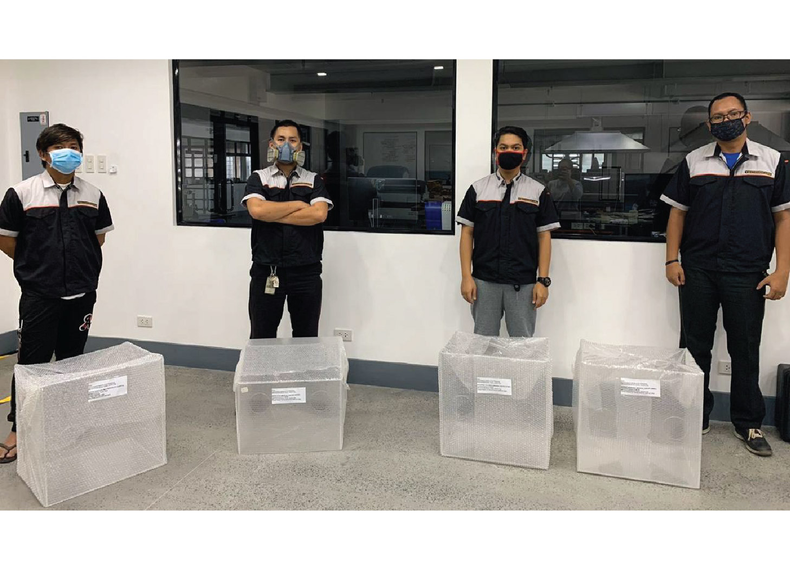
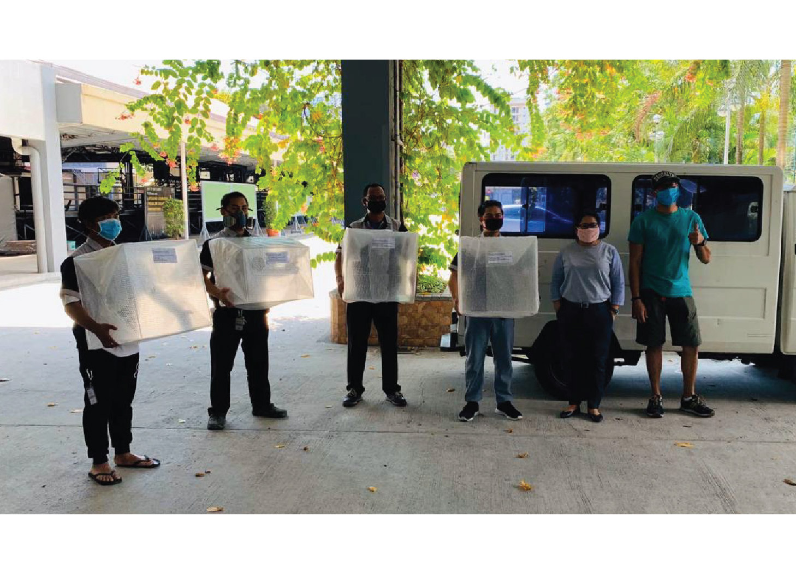

COVID-19: Community Updates
T.I.P. TechnoCoRe produces aerosol boxes, face shields, to help medical frontliners
The Technological Institute of the Philippines, through its TechnoCoRe thrust, together with volunteers from within and outside of the school, is currently working on producing aerosol boxes, face shields, and portable ventilators in an aim to help medical frontliners in their effort to treat COVID-19 patients.
The aerosol box is a transparent cube made of acrylic or polycarbonate which covers a patient’s head during intubation, minimizing medical frontliners’ exposure to body fluid droplets patients release during the process. The simple box design was developed in Taiwan. Aside from the aerosol box, T.I.P. TechnoCoRe also produces face shields which are also donated to hospitals and clinics.
As of March 30, 2020, TIP TechnoCoRe, with the help of external groups, has sent out aerosol boxes and face shields to hospitals such as, The Medical City, Philippine’s Children’s Medical Center, World City Medical Center, Quirino Memorial Medical Center, Taytay Doctors Multispecialty Hospital, and Marikina Doctors Hospital and Medical Center.
On top of the boxes and face shields, disinfection tents and portable ventilators, based on designs available online, are also currently being fabricated by TIP TechnoCoRe. Although the government approval process for devices such as the ventilator is complex, and it is not sure yet whether doctors will really use these devices, TIP TechnoCoRe would like to have the prototypes ready for evaluation in case the opportunity and need arises.
When asked about the significance of these projects to the country’s fight against COVID-19, T.I.P. Senior Vice President Angelo Lahoz said, “TIP just wants to help in any way it can. We have a growing pool of school volunteers who are willing and able to help, this is our contribution to the fight. ”
